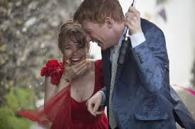

Jennifer Franco

Hobbies
Me encanta disfrutar de una buena película en mi tiempo libre y también salir a caminar por una plaza cercana. No importa si estoy viendo un thriller emocionante o una comedia ligera; siempre encuentro un momento para relajarme y sumergirme en una historia cautivadora. Al mismo tiempo, las caminatas me proporcionan una sensación de paz y bienestar, además de ser una excelente oportunidad para despejar mi mente. A menudo llevo a mi perro conmigo, lo que hace que cada paseo sea aún más agradable.
Estudios
Estoy actualmente en plena preparación para mis exámenes finales en la universidad, donde estudio Recursos Humanos. A pesar de que mis estudios requieren mucho tiempo y esfuerzo, trato de equilibrar el trabajo académico con actividades que me permitan relajarme y mantenerme enfocada. Las caminatas y las noches de cine son mi forma de liberar el estrés y de reflexionar sobre lo que he aprendido. Mi familia me apoya incondicionalmente en este proceso, brindándome consejos y motivación para alcanzar mis metas académicas.
Aspiraciones
Creo que mi capacidad para organizar mi tiempo y mantener un equilibrio entre mis estudios y mi vida personal me sería muy útil en un entorno profesional. La disciplina que aplico en mi preparación académica, junto con mis habilidades para gestionar actividades y disfrutar de momentos de descanso, demuestra mi capacidad para manejar múltiples responsabilidades. Además, mi experiencia en trabajo en equipo y mi habilidad para adaptarme a diferentes situaciones me permiten aportar valor a cualquier empresa en la que me desempeñe.
¿Qué series me gustan?
Gilmore girls
Sigue la vida de Lorelai Gilmore y su hija Rory en el pequeño pueblo de Stars Hollow. La trama explora la relación cercana entre madre e hija mientras enfrentan los desafíos de la vida, el amor y la carrera profesional. Con un estilo rápido y un diálogo ingenioso, la serie mezcla comedia y drama mientras aborda temas como las expectativas familiares, las amistades y las aspiraciones personales.
Game of Thrones
Basada en las novelas de George R.R. Martin, que se desarrolla en los continentes ficticios de Westeros y Essos. La trama gira en torno a la lucha por el trono de hierro en el reino de los Siete Reinos, enfrentando a varias familias nobles como los Stark, los Lannister y los Targaryen en un intrincado juego de poder, traición y alianzas. Paralelamente, una amenaza sobrenatural se cierne en el Norte, con los Caminantes Blancos y su ejército de muertos en ascenso.
Grey's Anatomy
centrada en un grupo de cirujanos en el ficticio Hospital Seattle Grace. La trama sigue a Meredith Grey y sus colegas mientras manejan complicadas operaciones quirúrgicas y sus vidas personales, que están llenas de romances, rivalidades y desafíos éticos. La serie explora temas profundos como la amistad, el amor y la resiliencia, y es conocida por su mezcla de drama médico intenso y relaciones interpersonales complejas.
¿Qué peliculas me gustan?
Cuestión de tiempo
Esta película, dirigida por Richard Curtis, sigue a Tim Lake, un joven que descubre que puede viajar en el tiempo. Utiliza su habilidad para mejorar su vida y las vidas de quienes ama, especialmente en el ámbito del romance con Mary, la mujer de sus sueños. A medida que Tim explora las posibilidades de cambiar eventos pasados, aprende lecciones valiosas sobre la vida, el amor y el valor de los momentos cotidianos.
Harry Potter
Basada en las novelas de J.K. Rowling, la serie de películas sigue al joven mago Harry Potter mientras asiste a la escuela de magia Hogwarts y enfrenta al oscuro mago Voldemort, que busca conquistar el mundo mágico y destruirlo. A lo largo de las ocho películas, Harry, junto a sus amigos Hermione Granger y Ron Weasley, descubre la verdad sobre su pasado, lucha contra las fuerzas del mal y aprende sobre la importancia de la amistad, el coraje y el sacrificio.
Orgullo y Prejuicio
LAdaptación cinematográfica de la novela de Jane Austen, dirigida por Joe Wright. La historia se centra en Elizabeth Bennet, una joven independiente en la Inglaterra del siglo XIX, y su relación con el rico y orgulloso Mr. Darcy. A través de malentendidos y tensiones sociales, la película explora temas de amor, clase y prejuicio, mostrando el desarrollo personal y el crecimiento mutuo entre los personajes principales mientras superan sus diferencias.